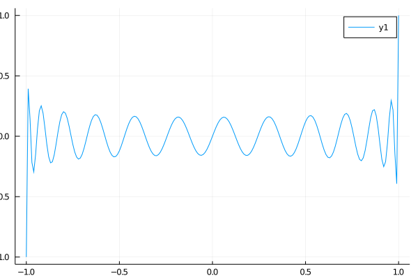
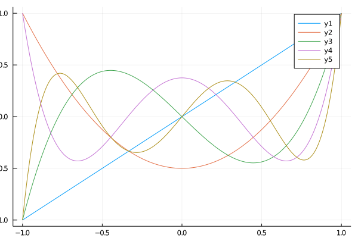
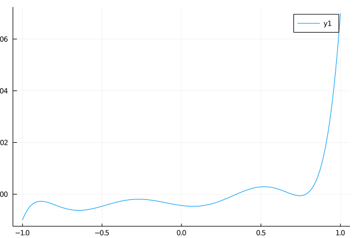

Jacobi
The Jacobi polynomials are a family of orthogonal polynomials over the univariate domain $x \in [-1,1]$ with respect to weighting parameters $\alpha, \beta$. The implementation in this library uses a recurrence relation to compute them. It is fast and stable to high order $n$. The recurrence relation is:
for some scalar $a,b,c$. Consult "Handbook of Mathematical Functions," Abramowitz and Stegun or Wikipedia for more information, for example on the meaning of alpha and beta.
Usage
The input vector or array x must be a scalar. It may have any number of dimensions. For evaluating a single polynomial, you should use the jacobi function:
using OpticsPolynomials
using Plots
x = collect(-1:0.01:1);
y = jacobi(25, 0., 0., x);
plot(x,y)
png("jacobi-5");/home/travis/.julia/packages/GR/BwGt2/src/../deps/gr/bin/gksqt: error while loading shared libraries: libQt5Widgets.so.5: cannot open shared object file: No such file or directory connect: Connection refused GKS: can't connect to GKS socket application GKS: Open failed in routine OPEN_WS GKS: GKS not in proper state. GKS must be either in the state WSOP or WSAC in routine ACTIVATE_WS

Multiple orders at once
For multiple polynomials, you should use jacobi_series:
using OpticsPolynomials
using Plots
using BenchmarkTools
x2=collect(-1:0.0001:1);
@benchmark jacobi_series(1:100, 0., 0., $x2)
plot(x2, jacobi_series(1:5, 0., 0., x2))
png("jacobi-set")/home/travis/.julia/packages/GR/BwGt2/src/../deps/gr/bin/gksqt: error while loading shared libraries: libQt5Widgets.so.5: cannot open shared object file: No such file or directory connect: Connection refused GKS: can't connect to GKS socket application GKS: Open failed in routine OPEN_WS GKS: GKS not in proper state. GKS must be either in the state WSOP or WSAC in routine ACTIVATE_WS

produces:
memory estimate: 15.72 MiB
allocs estimate: 129
--------------
minimum time: 356.801 μs (0.00% GC)
median time: 410.901 μs (0.00% GC)
mean time: 756.492 μs (44.86% GC)
maximum time: 3.220 ms (72.07% GC)
--------------
samples: 6598
evals/sample: 1As compares to:
function series_simple(ns, α, β, x)
out = Array{eltype(x), 2}(undef, length(x), length(ns))
for i in eachindex(ns)
view = selectdim(out, 2, i)
view .= jacobi5(ns[i], α, β, x)
end
return out
end
@benchmark series_simple(1:100, 0., 0., $x2)BenchmarkTools.Trial:
memory estimate: 60.62 MiB
allocs estimate: 596
--------------
minimum time: 56.425 ms (1.75% GC)
median time: 61.686 ms (5.18% GC)
mean time: 63.276 ms (5.55% GC)
maximum time: 72.470 ms (7.30% GC)
--------------
samples: 80
evals/sample: 1The speedup is 158x.
Sums
For sums of polynomials, you should use jacobi_sum:
using OpticsPolynomials
using Plots
x3=collect(-1:0.01:1);
# polynomial order 1..10, uniform weights 0.01
jacsum = jacobi_sum(1:7, fill(0.01, 7), 0., 0., x3)
plot(x3, jacsum)
png("jacobi-sum")/home/travis/.julia/packages/GR/BwGt2/src/../deps/gr/bin/gksqt: error while loading shared libraries: libQt5Widgets.so.5: cannot open shared object file: No such file or directory connect: Connection refused GKS: can't connect to GKS socket application GKS: Open failed in routine OPEN_WS GKS: GKS not in proper state. GKS must be either in the state WSOP or WSAC in routine ACTIVATE_WS

The speedup of this function compared to the naive approach is similar.
Core Functions
OpticsPolynomials.jacobi — Functionjacobi(n, α, β, x)Compute the Jacobi polynomial of order n and weights α,β at point x.
This function uses a recurrence relation and is numerical stable to very high order. The computation time is linear w.r.t. the order n. jacobi(n, a, b, x) is also linear w.r.t. the size of argument x. x should be passed as an array, and jacobi should not be called with dot syntax, for best performance.
See also: jacobi_series, jacobi_sum
OpticsPolynomials.jacobi_series — Functionjacobi_series(ns, α, β, x)Compute a series of Jacobi polynomials of orders n. Returns an array with shape (size(x)..., length(ns)). That is, the final dimension contains the modes and the first dimension(s) are spatial.
See also: jacobi, jacobi_sum
OpticsPolynomials.jacobi_sum — Functionjacobi_sum(ns, weights, α, β, x)Compute a sum of Jacobi polynomial of order n weighted by weights.
See also: jacobi, jacobi_series
Utilities
OpticsPolynomials.jacobi_weight — Functionjacobi_weight(α, β, x)Compute the weighting function (1-x)^α * (1-x)^β .